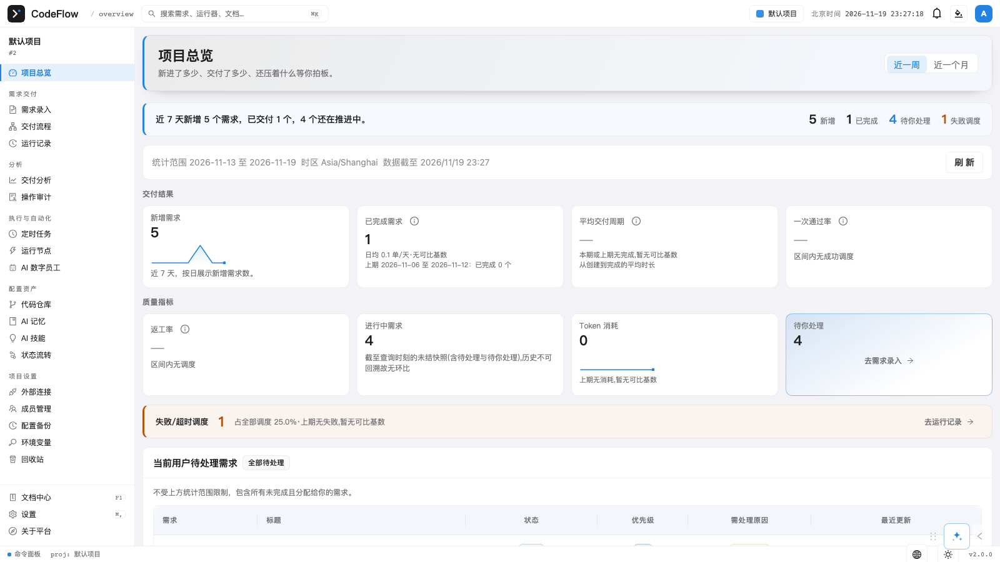
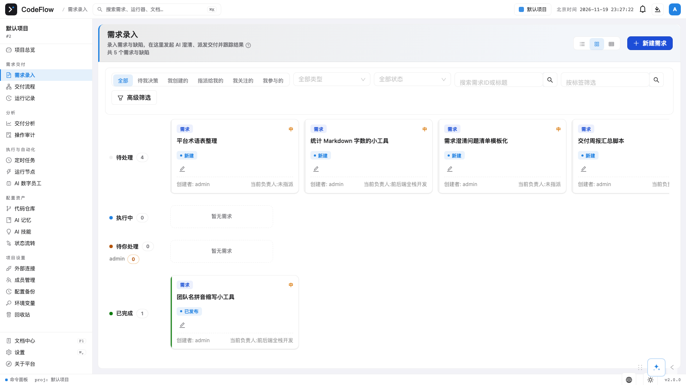
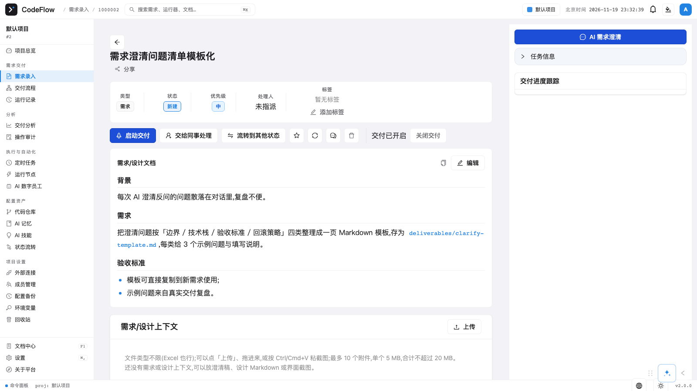
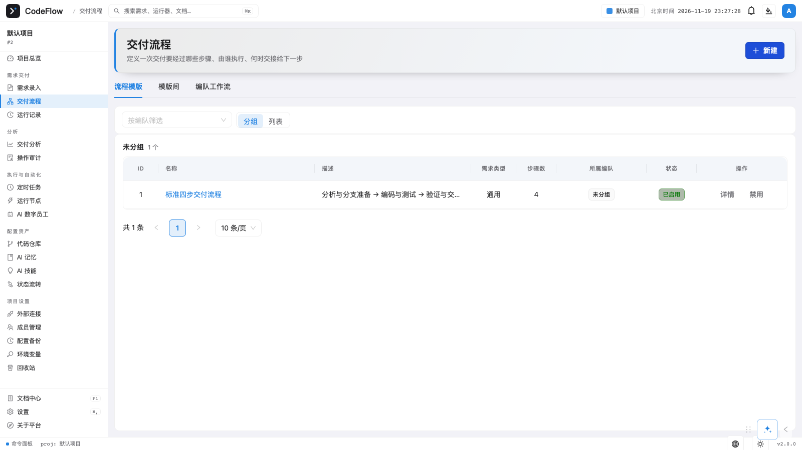
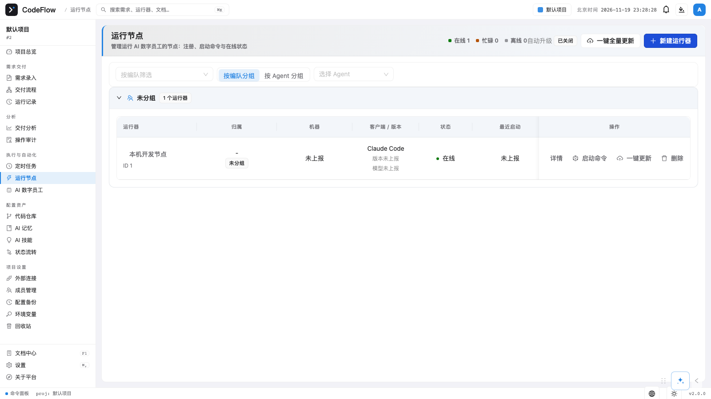
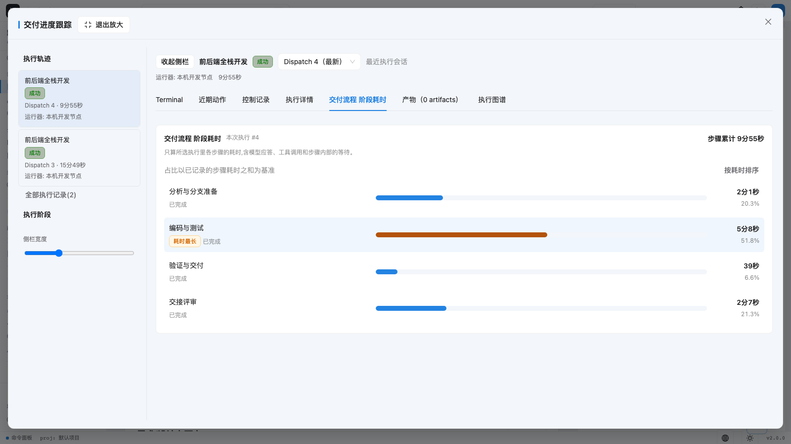
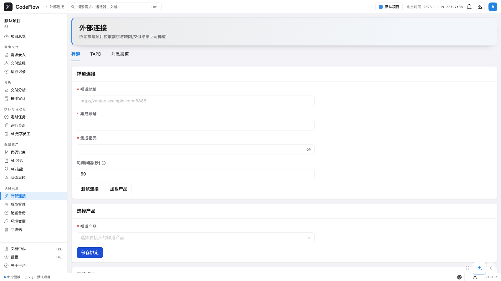
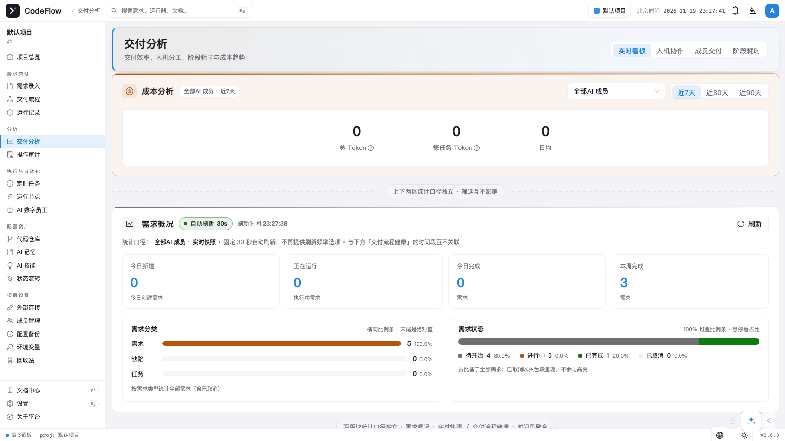

本文写给还没接触过这个平台的人：CodeFlow 是什么、解决什么问题、哪些坑让我改了设计、以及怎么在五分钟内跑起来。
全文约 6000 字，阅读时间 15 分钟。只想看部署命令的，直接拉到「上手」那一节。
先交代一下背景。
这两年 AI 编程工具的进化肉眼可见：Claude Code、Codex、Cursor、Gemini CLI、Qoder CLI，个个都能读懂仓库、改代码、跑测试。写代码本身，已经不是瓶颈了。
但真把一条需求从「提出来」走到「交付完」，你很快会撞上另一堵墙：这些工具再强，本质上都是个人 AI——每一次干活，都是你亲自发起。需求散在禅道、群里、口头里，你得自己把它们翻成一句话喂给 AI；它跑起来了，你得自己盯着；跑完了，你得自己验证、自己把结论同步回工单。工具越是能干，人反而越是围着它转。
一个人用 AI 很爽，可一旦需求多起来、人多起来，上下文就开始在人手里丢——切一次丢一次，换个人从头再来。
真正的坎不是「模型不够强」，而是从个人 AI 到组织 AI 的这一步：怎么让 AI 的每一次产出，不再躺在某个人的终端记录里，而是变成整个团队可查、可接、可审计的交付资产。
CodeFlow 就是冲着这一步来的：一套 AI 需求交付平台。它把需求到交付的整条链路管起来——需求怎么进来、AI 怎么接活、在哪台机器上干、产物和结论怎么留、人什么时候必须介入，每一步都有归属。
这一篇，我想认真讲讲它。
CodeFlow 解决的问题，全部长在一条真实的交付链路上。先把卡点摊开，一共四个：
需求散落各处。 禅道里一条、群里一句、会上口头提一嘴。两周之后没人说得清当时到底要什么——不是没人记得，是记得的人换了上下文。
每一步做完就散了。 方案在聊天记录里，代码在 Git 里，测试结果在某人的终端里，部署在另一台服务器上。单看每一步都做完了，拼在一起却回答不了一个问题：这条需求现在到底走到哪了？
上下文跟着人走。 一个人手上压着五条需求，切一次丢一次；换个人接手，前面所有的判断作废，从头再问一遍。
出了问题没有证据。 开发一句"是不是环境问题"，就能让所有讨论回到原点——因为你拿不出东西反驳。
我的结论是：真正拖慢交付的，是上下文在人和工具之间反复丢失，是每一步做完就散了。 写代码的速度救不了这个。
所以 CodeFlow 做的事情很克制：把一次交付拆成一条有状态、可回看、可交接的流水线。需求怎么进来、AI 怎么接活、在哪台机器上干、产物和结论怎么留、人什么时候必须介入——每一步都有归属。
一句话：它不替你想清楚要做什么，它替你把做过的每一步留下来。
下面第三节，我会跟着一条真实需求把这条旅程走一遍——六个节点，每一站长什么样、为什么这样设计。

项目总览。第一屏是一句结论加四个关键数字，而不是八个需要自己总结的方格。
划边界比吹功能重要，这部分我放在前面讲。
它不是"一句话生成整个系统"的魔法。 需求本身说不清，它救不了。我试过拿一句模糊的话直接开跑，AI 会停下来反问你——这不是缺陷，是设计。
它不是又一个 AI 编程工具。 Claude Code、Codex、Cursor、Gemini、Qoder 这些是干活的手。CodeFlow 是派活、盯进度、收结果、留证据的那一层。手怎么用你自己选，平台六种 CLI 都支持，不绑厂商。
它不替代需求管理和协作工具。 需求在禅道里，就从禅道来；交付完了，结论写回禅道的评论。它不试图让你换掉已经在用的东西。
它不能替你验收。 产物、测试记录、部署结果都留给你了，但"这算不算做完了"这个问题，还是人回答。
这些边界不是没能力做，是故意不做。后面讲设计的时候你会看到，有几条边界我是用真 bug 换来的。
这一节跟着一条真实需求走完全程。平台的全部能力，都长在这条旅程的六个节点上。
在「需求录入」写一条需求，或者让平台从禅道自动同步——绑定产品之后每 60 秒自动拉取，有更新才进来，重复拉取不会重复建单。需求一律进看板，按状态分列，谁该处理什么一目了然。

启动交付之前，负责澄清的 AI 数字员工会先和你对话：边界在哪、技术栈定什么、验收标准是什么、失败了要不要回滚。我第一次跑的时候，AI 反问了 19 个问题。当时觉得啰嗦，后来意识到：这 19 个问题如果拖到开发一半才冒出来，每一个都是一次返工。
澄清结束产出 spec.md 和 plan.md 存进附件，你确认了方案，才开工。

每个项目可以定义自己的交付流程：这条需求经过哪几步、每一步由哪个 AI 数字员工执行、干完交给谁。一条典型的交付流程是四步：分析与分支准备 → 编码与测试 → 验证与交付 → 交接评审。
点「启动交付」，选一个编队，需求就进入交付流程了。

真正干活的是运行节点——装在你自己的笔记本、CI 机器或内网服务器上。平台把启动命令生成好，一键复制，粘贴执行，节点主动连上来。代码在内网、被测系统在内网都没关系——节点主动往外连，平台不需要访问你的机器。
节点上跑什么 CLI 你自己定：Claude Code、Codex、Cursor、Gemini、Qoder 都行，平台不绑厂商。

执行中的每一步都落在需求详情里：当前卡在哪一步、上一轮为什么失败、调试日志是什么。失败不会被吞掉，可以一键重新派发。成功的交付同样留痕——一次真实交付会归档 8 个产物，方案、代码、测试输出、部署记录分开存放。

验收通过后，把需求流转到"已发布"。平台会自动把交付结论写回需求源头的评论（比如禅道），闭环有据。
这里有一条我用真 bug 换来的设计决策：平台只回写交付备注，不代改外部单据的状态。 "已解决/关闭"必须由人在禅道侧按。为什么不做？因为"修没修好"是人的判断，让工具替人关单，看起来是自动化，实际上是把验收责任扔给了机器。

不是一个"做完了"的口头结论，而是一组能拿去复盘的数：需求量、平均交付周期、一次通过率、返工率、失败/超时调度、Token 消耗，以及需求分类和状态占比。哪一类需求总返工、哪一步在拖、成本花在哪——看数就知道。

上面这条旅程不是画出来的，下面四个产品全部通过 CodeFlow 从需求开始交付，数字都是实测的。
Python 3 仅标准库，零 pip install。20 并发 × 50 次：50/50 成功，QPS 1975.77，错误 0。
这次交付撞上一个真缺陷：Python socketserver 默认 accept 队列只有 5，20 并发直接打满，内核重置了 36/50 个连接，成功率掉到 28%。把 request_queue_size 提到 512，回到 100%。
Node.js 单进程，零第三方运行时依赖；内置 sqlite，降级可用。下单在单个事务里完成"校验 → 扣库存 → 建单"，失败整体回滚。
验收：浏览 → 加购 → 下单（订单号 NO202611120555218625）→ 管理端发货 → 已发货，全链路走通。
同样仅标准库。7 个模块、12 条路由；分数越界返回 400 且整批不落库；重启后数据一致；级联删除不留孤儿；100 并发 0 失败。
它和性能测试平台撞了同一个 accept 队列的坑。第二次遇到，十分钟改完。 坑被记下来，第二次就不是坑了——这也是我坚持"每个交付都留自测记录"的原因。
把多人周报合并成一份，按人分组、事项去重。这个案例暴露的是另一类问题：产物上传后子目录丢了——收集产物用了 glob("*") 只拿到第一层，改成 rglob 才完整。同类问题还有任务包摘要前导零被截断，校验必失败。
这类缺陷的共同点：单元测试全绿，但把产物拉下来跑不起来，等于没交付。只有真的把产物当文件用，才会暴露。
打磨这套平台的过程中，有几个地方是我主动改掉的，原因比功能本身更有意思。
外部需求按谁绑定落到谁的项目。 早期版本外部拉取统一落到默认工作区，结果多项目环境下一同步，需求全跑到一个项目里去了。改成按绑定的归属落库，并且每轮拉取都留同步记录，调度器判重才有依据。
派发的任务包，先落事务再通知。 早期版本先发通知再提交事务，执行器收到通知来下载，包还没落盘，404。改成事务提交之后再发通知，一次修复，再也没有复现过。
任务包摘要逐字节补零。 摘要用十六进制字符串传，前导零被丢掉，0f 变成 f，下载校验必失败。这种 bug 报错信息完全对不上根因，查了一下午。改成按字节补零之后根治。
第一次注册的人必须是管理员。 部署完发现平台配置入口全灰——因为注册接口固定写普通用户，而库里没有别人。全新部署等于没法用。改完之后，"注册即管理员"成为文档里明确的一条。
这些不是什么高深的设计，都是部署一遍、真的用一遍才会撞上的东西。也是我坚持"clone 即部署、一条命令起全栈"的原因——自己都不从零装一遍，就永远不知道哪里会断。
需求说不清，它救不了。 澄清能把"没说清"问出来，但答案得在你心里。
模型额度是真门槛。 长任务中断在中间，重跑 Token 再花一遍。建议确定性任务用 Flash 模型，澄清和评审用旗舰模型。
环境要自己装。 运行节点上缺 JDK、Maven、Node，任务就会失败。平台派活，不装环境。
它不是无人值守。 需求澄清要你参与，方案确认要你点头，验收要你看。省掉的是"盯着干活"和"来回传话"，不是"做判断"。
以上数据来自演示与真实交付环境的运行记录。 不同团队的需求复杂度、模型选择和运行环境差异很大，建议先用一条真实需求试点，再决定要不要接入团队流程。
独立开发者 / 一人多项目：把并行需求的上下文交给平台，只处理澄清和验收，省掉来回切换的心智损耗。
小团队负责人：把交付过程标准化成流程模板，谁在做什么、卡在哪，看板一眼可见，不用开会问进度。
平台与效能团队：审计留痕、交付指标、外部系统对接都在平台内，可以作为研发效能体系的底座，API 可对接自建流水线。
想转型 AI 交付的团队：从一个需求、一个数字员工、一个运行节点开始，先跑通一条线，再扩展角色和并行度。
git clone https://github.com/qsumm/CodeFlow.git && cd CodeFlow
cd platform
./deploy.sh upseekdb + 应用 + 107 张表，一条命令全部就位。打开 http://localhost:7001/register，注册的第一个账号即平台管理员。
建议的上手顺序：先跑通一条需求（澄清 → 派发 → 验收），再给数字员工配运行节点，然后开始并行两条，最后把踩过的坑沉淀进技能和记忆。不要一上来就配四个角色。
坦率讲，这套平台还有不少粗糙的地方：部分查询是手写 SQL，没有 ORM——每一行都看得见，代价是字段改起来比用框架费劲；前端有几个页面的历史包袱还在；多节点部署的密钥分发方案也还偏手工。这些都在待办清单上，会慢慢磨。
这套平台打磨到现在，登记过十四个交付缺陷，重写过一遍手册。它不是某个灵光一现的作品，更像是一段时间里把"交付应该是什么样"这个问题反复问自己的结果。
AI 的本质，从来都是以人为本。希望这套东西能帮你把重复的活交出去，把省下来的注意力，花在只有人能做的事情上。
项目地址：https://github.com/qsumm/CodeFlow
部署：./deploy.sh up · 数据库 seekdb · 表结构自动初始化
❤️ 关注公众号「一鸣AI编程」，回复 codeflow 拿部署包和演示环境地址
❤️ 有问题欢迎留言，或者直接去仓库提 Issue
❤️ 觉得有用的话，顺手去仓库点个 Star，真的很重要